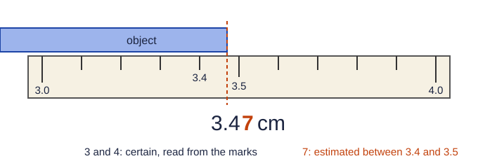

Every measurement has an estimated digit
No instrument is perfect. When you read a ruler, a graduated cylinder or a thermometer, you read the marks you can see, then estimate one more digit between them (Figure 1). That last digit is uncertain, but it still carries information, so you write it down. This doubt in the last digit is called measurement uncertainty.

The significant figures of a measurement are its certain digits plus that one estimated digit. A balance that reads 151.37 g gives five significant figures; a bathroom scale that reads 150 g gives two or three. More significant figures mean a more finely made measurement.
Counting significant figures
| Kind of digit | Counts? | Example | Significant figures |
|---|---|---|---|
| Nonzero digits | always | 4.36 | 3 |
| Zeros between nonzero digits | yes | 4005 | 4 |
| Leading zeros (in front) | no, they only place the point | 0.0045 | 2 |
| Trailing zeros after a decimal point | yes, they were measured | 4.50 | 3 |
| Trailing zeros with no decimal point | unclear; treat as not counting | 2500 | 2 |
Scientific notation removes the doubt: 2.5 × 10³ has two significant figures, 2.50 × 10³ has three and 2.500 × 10³ has four. A decimal point at the end, as in 2500., also means all four digits count.
Converting a measurement to scientific notation is a quick way to count: 0.004050 g = 4.050 × 10⁻³ g, four significant figures.
Exact numbers
Some numbers are not measured at all. A count of objects ("3 bolts") and a defined equality ("1 kg = 1000 g", "1 mL = 1 cm³") are exact numbers. They have no uncertainty, so they never limit the significant figures of an answer. Only measured values do.
Multiplying and dividing
The answer keeps as many significant figures as the measurement with the fewest significant figures.
Worked example. A liquid sample has a mass of 23.45 g and a volume of 12.0 mL. What is its density?
d = 23.45 g ÷ 12.0 mL = 1.954166… g/mL
23.45 has four significant figures; 12.0 has three. The answer keeps three: 1.95 g/mL.
Adding and subtracting
Here the rule is about decimal places, not significant figures. The answer keeps as many decimal places as the value with the fewest decimal places, because that value's uncertainty is the largest.
Worked example. Add 12.52 g + 3.1 g + 0.247 g.
12.52 + 3.1 + 0.247 = 15.867 g
3.1 is known only to the tenths place, so the sum is too: 15.9 g. Note that the answer has three significant figures even though 0.247 also has three and 12.52 has four: in addition, the decimal places decide.
The exam's readers report mixing up these two rules as one of the most common calculation errors.
Rounding once, at the end
In a calculation with several steps, keep one or two extra digits in every intermediate result and round only the final answer. Rounding at each step lets small errors build up and can change the last digit. Track how many significant figures each step allows, but do not throw digits away until the end.
Worked example. Four readings, 50.31 g, 49.62 g, 50.08 g and 49.95 g, are averaged.
Sum: 199.96 g (two decimal places, so five significant figures here). Divide by the exact count 4: 199.96 ÷ 4 = 49.99 g.
The count does not limit the answer, so the average keeps the two decimal places of the data: 49.99 g.
Precision and accuracy
These words mean different things. Precision is how closely repeated measurements agree with each other. Accuracy is how close they are to the true value. A balance that is not zeroed can give readings that agree to 0.01 g but are all 0.9 g too low: precise, not accurate. That kind of consistent shift is a systematic error, and averaging more readings does not remove it. Readings that scatter in both directions show random error, which averaging does reduce.
| Readings of a true 50.00 g mass | Precise? | Accurate? |
|---|---|---|
| 49.12, 49.13, 49.11, 49.12 | yes | no (all low) |
| 50.31, 49.62, 50.08, 49.95 | no | average close, single readings not |
| 50.01, 49.99, 50.00, 50.00 | yes | yes |